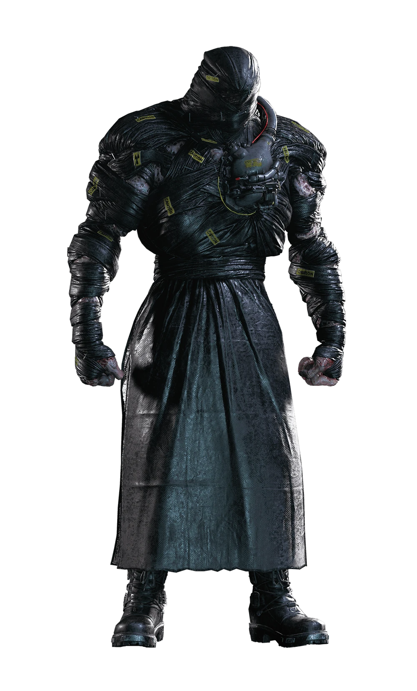
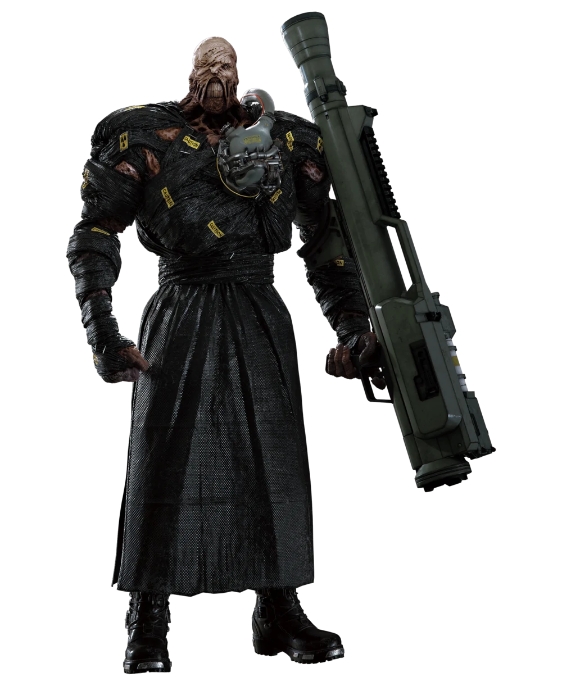
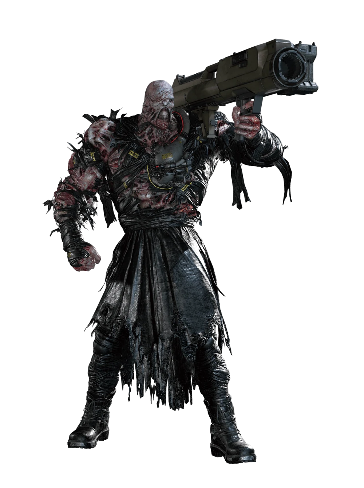
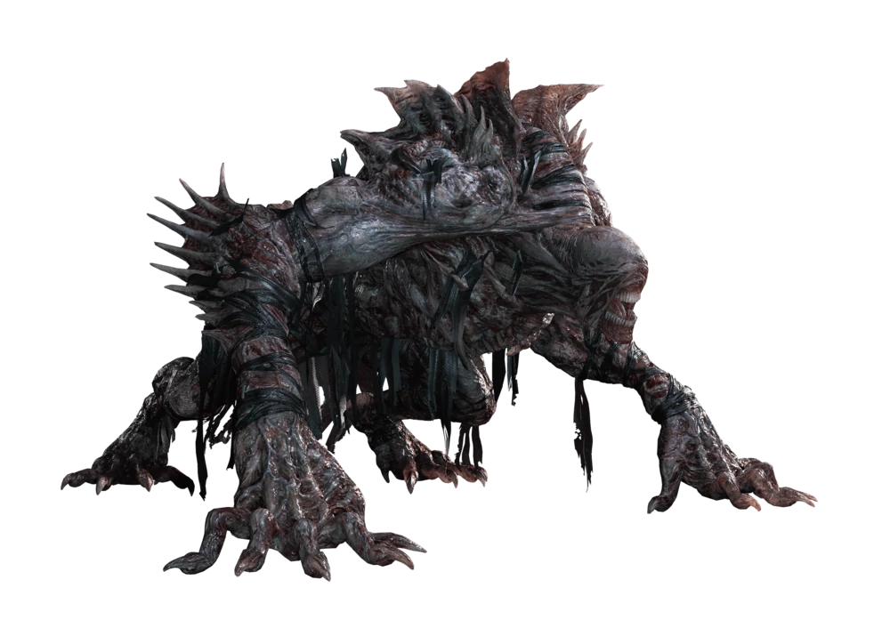
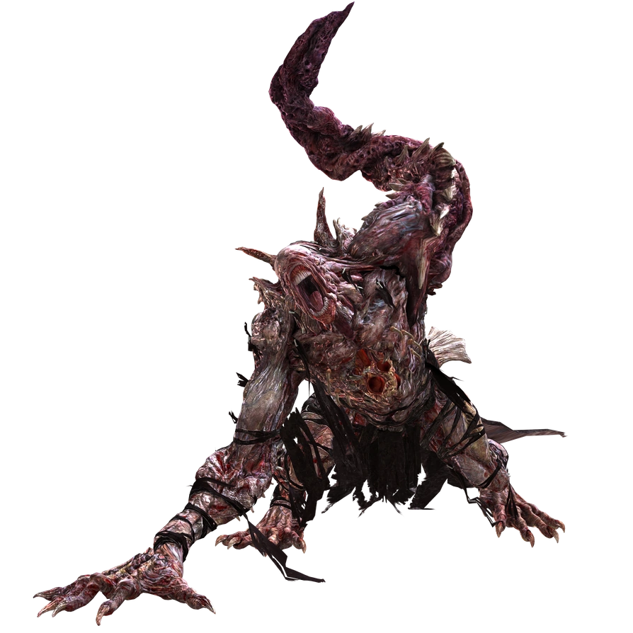
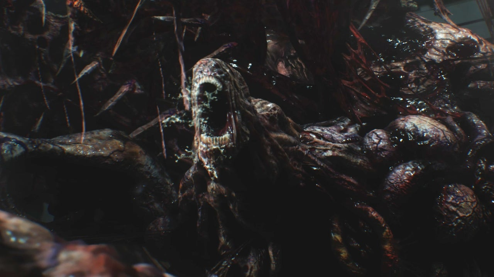

STAGE 1
|  |  |  |
|
Este é o resultado da infusão do parasita NE-α em um Tyrant T-103. A criatura foi desenvolvida pela divisão européia da Umbrella e foi utilizado para eliminar os membros dos S.T.A.R.S. que permaneceram em Raccoon City. É mais inteligente que um Tyrant comum e pode atacar com golpes poderosos, além de ser capaz de utilizar armas pesadas como um lança-chamas e um lança-foguetes. Em alguns encontros é possível fugir, mas você pode derrubá-lo com tiros certeiros no dispositivo em seu peito para obter maletas de suprimentos. |
_____________________________________________________________________________________________________________________
STAGE 2
|  |  |
|
Em sua Fase 2, Nemesis sofre mutação devido à exposição ao fogo. Agora mais ágil e poderoso, o melhor é utilizar da espingarda e do lança-granadas com projetéis incendiários para causa maior dano enquanto desvia de seus ataques. Quando ele começar a correr pelo cenário, use os projéteis de mina para derrubá-lo e atirar no ponto fraco exposto em seu peito. Quando for confrontá-lo pela segunda vez nessa forma, use a mesma estratégia inicialmente, mas quando ele começar a correr pelo cenário, tome cuidado com os zumbis e preste atenção em onde ele irá se esconder (Carlos irá indicar o lugar para você) e atire nos botões para eletrecutá-lo. Quando ele estiver caído, atire no ponto fraco revelado em seu peito. |
_____________________________________________________________________________________________________________________
STAGE 3
|  |
|
A Fase 3 de Nemesis é gigantesca e monstruosa, e exige o uso da poderosa arma FINGER para ser eliminado. Após efetuar o primeiro disparo, atire nas “bolhas” amarelas espalhadas pelo seu corpo. Quando ele cair, empurre as fontes de energia. Repita o processo até conseguir usar a arma uma segunda vez. |
 ® Direitos Reservados
® Direitos Reservados